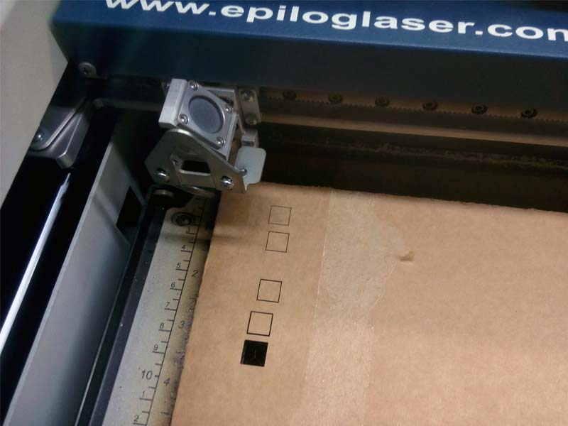
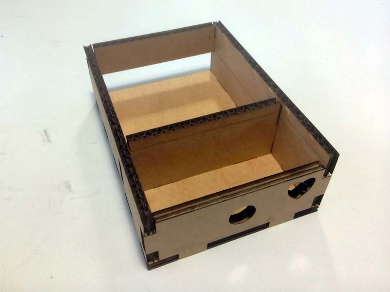
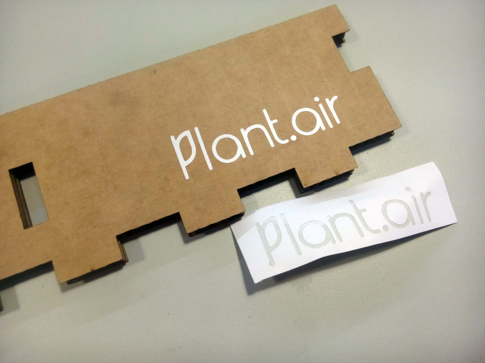
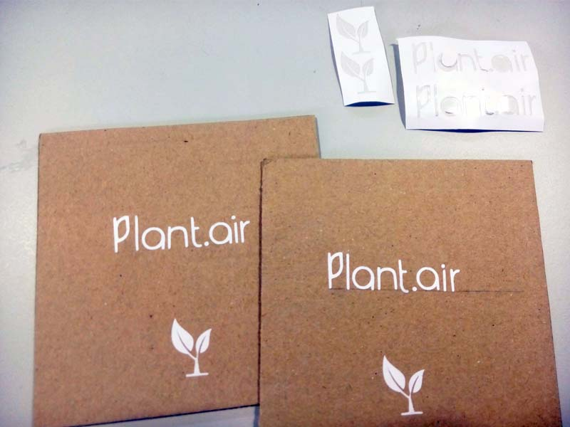
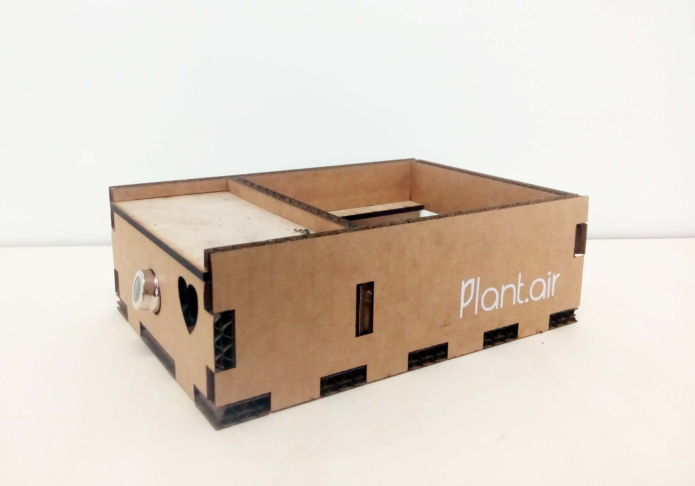
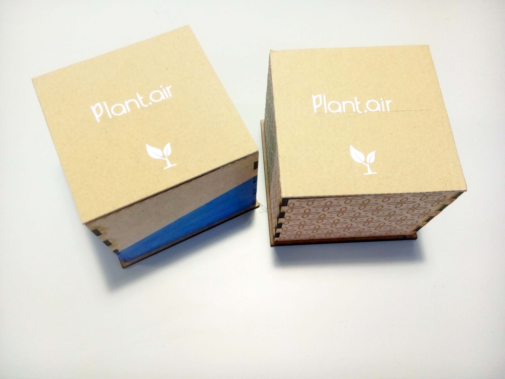

lasercutter . individual

In the previous week I drew the 3D drawing of the box that I would like to use for my project.
This week, I started by exporting the 3D Design from Rhinoceros 3D to Adobe Illustrator, where all the planning of my drawing became 2D, vectorial and editable.
After having my planning with the measurements, I started with the CorelDraw program to be able to print on the lasercutting machine.
On CorelDraw it was necessary to:
- Define the page size equal to the maximum measures of the machine, which are 600mm x 300mm.
- Define the minimum line thickness for the laser cut to be as precise as possible.
- Define and paint the areas that will be to burn and not to cut with black solid color, RGB: 0,0,0
- Finally, set the cut and burn parameters in the print preset.
Before starting to cut, I decided to do a few small tests on the material first (figure on the right) to understand the parameters of speed and power needed to cut each type of material.
lasercutter . process


For my first tests of my box design, I decided to include three types of materials:
To cut the Cardboard I used for as:
- Vetor Setting:
- Speed: 10%
- Power: 40%
- Freq: 500 Hz
- Raster Setting:
- Speed: 100%
- Power: 20%
To cut the MDF wood I used for as:
- Vetor Setting:
- Speed: 12%
- Power: 100%
- Freq: 500 Hz
- Raster Setting:
- Speed: 60%
- Power: 60%
To cut the acrylic I used for as:
- Vetor Setting:
- Speed: 10%
- Power: 100%
- Freq: 5000 Hz
The cuts and the fittings were fine, and the pieces fit perfectly to assembly the box. I used white glue to help fix the pieces
To ensure that the parts are secured without glue, it is necessary to reduce 1mm on each side to the fittings. For example, if the thickness of the material is 3mm, the fittings should be 2.98mm to get stuck.
Vinylcutter





I decided to give a name and create a logo for my project. Which will be called "Plant.Air".
I used the logo and cut it on vinyl to customize the boxes I did before in laser cut.
To do this, I used my vectorized logo in the Illustrator program and imported it into the PLOT software that works with acutting plotter ROHS.
In PLOT software it is necessary to define as features:
In the vinyl cutting machine it is necessary to define the origin and the parameters:
After the cut was done, the logo was removed and pasted into cardboard and MDF wood cartons.